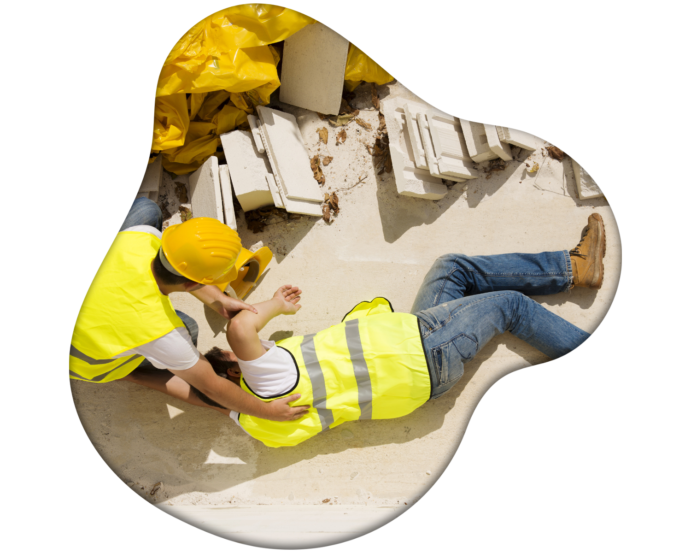

Fysiska arbetsmiljörisker
Fysiska arbetsmiljörisker förekommer i alla branscher. I bygg- och anläggningsarbete är det en hög olycksrisk, där fallolyckor är särskilt vanliga och ofta leder till allvarliga skador eller dödsfall. Fallolyckor kan delas in i två typer:

Typ 1: Fall på samma nivå
Dessa olyckor sker när en person snubblar, halkar eller faller till samma nivå som de går eller står på. Vanliga orsaker är:
- Ojämnt underlag
- Halkiga ytor
- Föremål som ligger i vägen
Förebyggande åtgärder
God ordning och städning på arbetsplatsen minskar risken för dessa olyckor och bidrar till att undvika långvarig sjukfrånvaro.
Typ 2: Fall till lägre nivå
Fall till lägre nivå är en av de främsta orsakerna till dödsfall inom byggbranschen. Dessa olyckor uppstår ofta när:
- Fallskydd saknas
- Fallskyddet är otillräckligt eller felaktigt installerat